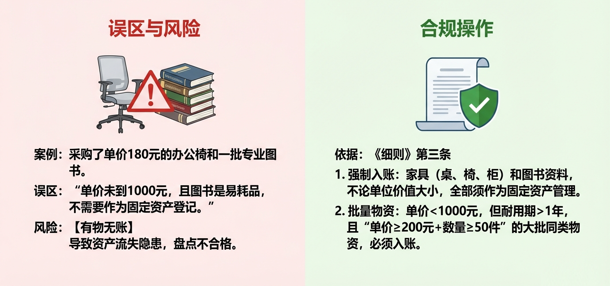
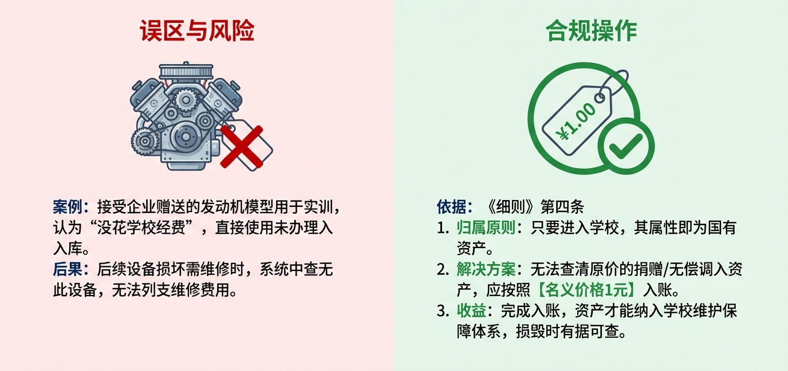
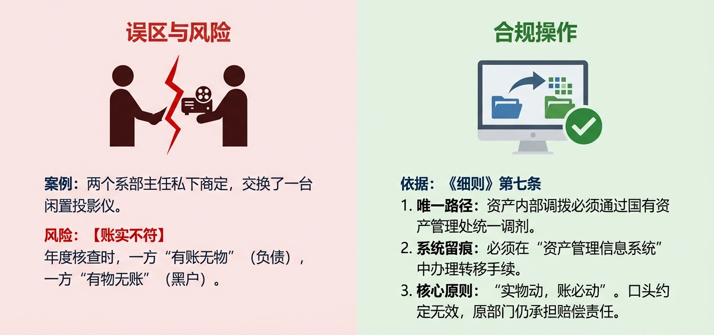
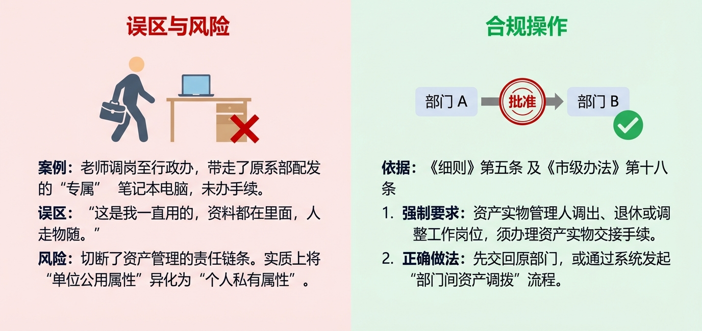
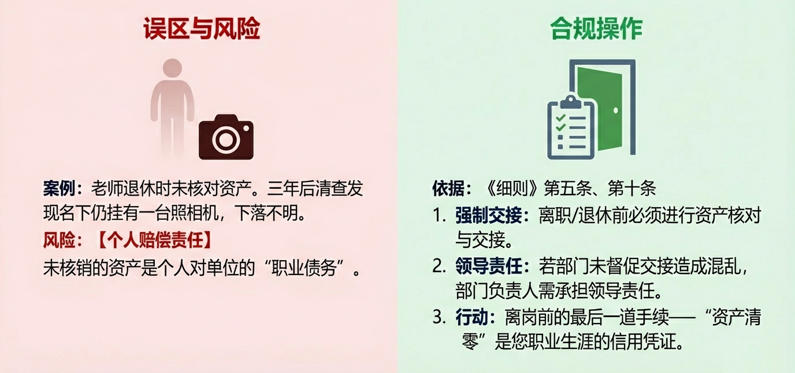
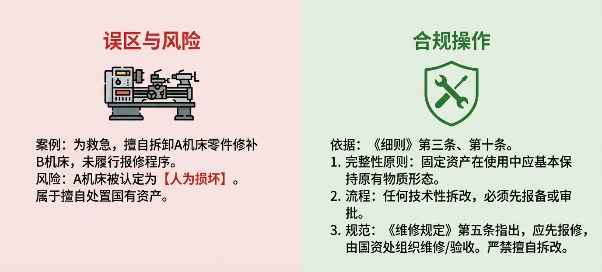
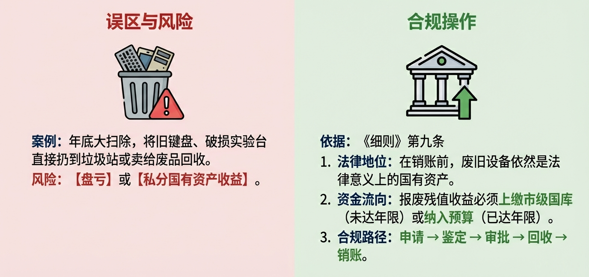
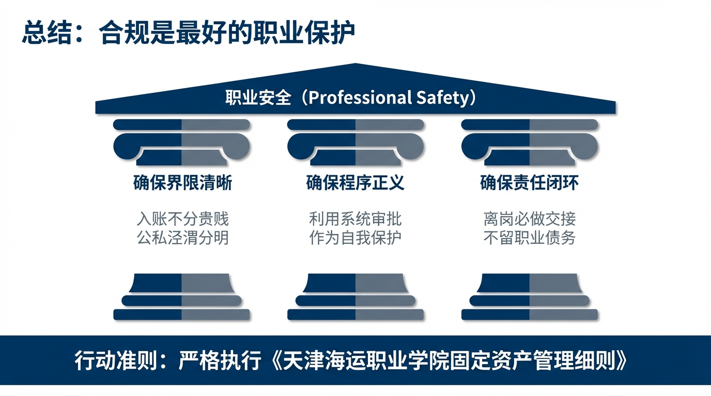

职业风险防控视角下的
固定资产全生命周期管理实务
培训目标
帮助教师理清资产与个人职业生涯的法律责任边界，通过全生命周期的合规操作，配合国资部门做好资产清查与管理，实现工作流程顺畅与个人职业安全的"双赢"。
第一部分：开场与破题
各位领导、各位老师，大家好。
在开启今天的培训之前，我想请大家思考一个本质问题：作为一线教师，我们为什么要花时间去了解看似繁琐的固定资产管理制度？
如果将其理解为单纯的"配合国资处工作"，那往往会感到负担。但如果我们从"第一性原理"——即事物最本质的逻辑来看，固定资产管理对我们每一位老师而言，实际上是一份严肃的"职业合约"。
根据《天津市市级行政事业单位国有资产使用管理办法》及我院《细则》，每一件领用人在您名下的资产，在法律属性上都是"国有资产"。
- 入账，是这份合约的生效
- 使用，是履行合约的过程
- 交接与处置，是解除合约的必经程序
第二部分：生命周期之"入口"
本部分包含场景：
1 场景一：被忽视的"小物件"
李老师给教研室采购了一批办公椅，单价180元；同时采购了一批专业图书。李老师认为："椅子单价未到1000元，图书属于易耗品，应该不需要作为固定资产登记。"

这是一个非常普遍的认知误区。如果这些物资未入账，在我们国资处进行全院资产盘点时，就会出现"有物无账"的情况，属于典型的资产流失隐患。
根据《细则》第三条，资产入账有明确的"铁律"：
- 特定类别强制入账：家具（如桌、椅、柜）和图书资料，不论单位价值大小，全部须作为固定资产管理。这意味着，哪怕是一把几十元的折叠椅，也必须入账。
- 批量物资标准：对于单价虽未达到1000元，但耐用期一年以上、单位价值≥200元且单批次件数≥50件的大批同类物资，也必须入账。
2 场景二：好心企业的"免费赠送"
某合作企业给王老师的实训室赠送了一台发动机模型用于教学。王老师认为这是自己联系来的资源，且没花学校经费，便直接放入实训室使用，未办理入库手续。

入账依据：根据《细则》第四条，接受捐赠的固定资产，如无法查清原价，应按照名义价格1元入账。
第三部分：生命周期之"使用"
本部分包含场景：
3 场景三：部门间的"私下流转"
机电系有一台闲置投影仪，经管系恰好需要。两位系主任私下商定后，直接将设备搬到了经管系使用。

资产是绑定在特定部门和责任人名下的。
合规流程：根据《细则》第七条，资产的内部调拨必须通过国有资产管理处统一调剂，并通过资产管理信息系统办理转移手续。
4 场景四：从"专属配发"到"隐形私产"（重点案例）
刘老师因工作需要，系里配发了一台高配置笔记本电脑和一台单反相机。因工作性质特殊，这两台设备长期由刘老师个人保管使用，几乎成了他的"专属装备"。
后来，刘老师因工作调整，调岗至行政办公室。他认为："这些设备里存的都是我的工作资料，而且一直是我顺手在用的，我去哪它们就该去哪。"
于是，刘老师未向原部门和国资处办理任何资产调拨或移交手续，直接将电脑和相机带到了新的工作岗位继续使用。

此案例是资产清查中导致"盘亏"和"资产去向不明"的典型原因，其核心问题在于切断了资产管理的责任链条。
1. 违规性质：侵占与责任断裂
- 业务痛点：对于原部门而言，刘老师带走设备导致"有账无物"；对于新部门而言，这些设备属于"有物无账"的黑户。一旦设备在此时丢失，两边部门都无法通过系统追溯责任。
- 定性：这种"人走物随"但不办手续的行为，实质上是将国有资产的"单位公用属性"异化为了"个人私有属性"。
2. 制度依据与合规要求
校内制度：根据《细则》第五条第（四）款第3项规定："资产实物管理人调出、退休或调整工作岗位的，须办理资产实物的交接手续"。
市级规定：《市级办法》第十八条也明确强调："资产使用人、管理人发生变化的，应当及时办理资产交接手续"。
第四部分：生命周期之"变动"
本部分包含场景：
5 场景五：退休后的"幽灵资产"
赵老师光荣退休，办理离校手续时未核对名下资产。三年后，国资处在清理陈年旧账时，发现赵老师名下仍挂着一台多年前领用的照相机，现已下落不明。

强制交接：《细则》第五条明确规定："资产实物管理人调出、退休或调整工作岗位的，须办理资产实物的交接手续"。
《市级办法》第十三条也强调"使用人员离职时，所用资产应按规定交回"。
第五部分：生命周期之"出口"
本部分包含场景：
6 场景六：擅自拆卸的"拼凑"行为
实训室两台旧机床均出现故障。周老师为了教学急需，未履行报修程序，擅自将A机床的关键零件拆卸，安装到B机床使用，导致A机床残缺不全。

完整性要求：《细则》第三条强调，固定资产在使用过程中应基本保持原有物质形态。
7 场景七：以为是垃圾，其实是资产
年底清整办公室，清理出一堆损坏的键盘、旧主机箱和破损实验台。年轻老师建议："这些东西已经没法用了，堆着占地，不如直接扔到垃圾站或卖给废品回收站。"

合规路径：
1. 集中报废：根据《细则》第九条，学院一般每年开展1次集中报废。
2. 收益归属：报废残值收益有着严格的流向规定。根据《细则》第九条，已达年限的报废收益上交财务纳入预算；未达年限的（非正常）报废收益须上缴市级国库。
根据《市级办法》第四十二条，严禁侵占、私分、截留资产使用收入。
第六部分：总结与行动建议
各位老师，通过上述全生命周期的案例分析，我们不难发现，严格执行《天津海运职业学院固定资产管理细则》，配合国资部门的日常登记、盘点和核查工作，本质上是为了实现三个"确保"：

确保界限清晰
入账不分贵贱，公私泾渭分明，避免无心之失触碰红线。
确保程序正义
在流转、处置等环节，依靠流程和审批单保护自己。
确保责任闭环
通过规范的交接，让每一段职业经历都清清白白。
培训结语
希望大家将资产管理的合规意识融入日常工作，
让制度成为保护我们职业安全最坚实的屏障。
主讲部门：国有资产管理处